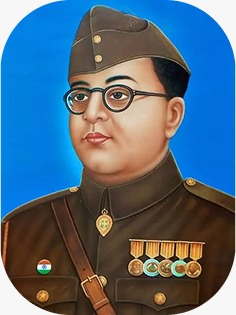
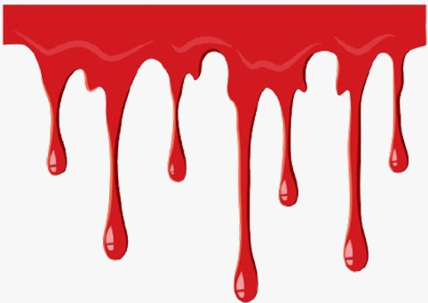

Subhas Chandra Bose, (born jan. 23, 1897 Cuttack, Orissa, India- died Aug. 18, 1945, Taipei, Taiwan [China]), India revolutionary. Preparing in Britain for a career in the Indian Civil Service, he resigned his candidacy on hearing of nationalist turmoli back home. Sent by Mohandas K. Gandhi to organize in Bengal, he was deported and imprisoned several times. He favoured industrialization, which put him at odds with Gandhi's economic thought, and, though he was elected president of the Indian National Congress in 1988 and 1939, without Gandhi's support he felt bound to resign. He slipped out of India in 1941 and carried on his struggle against the British from Navi Germany and later from Southeast Asia. In 1944 he invaded India from Burma (Myanmar) with a small army of Indian nationals and Japanese, but his army was soon forced to retreat. He fied Southeast Asia after the Japanese surrender in 1945 and died of burns suffered in 1945 and died of burns suffered in a plane crash.